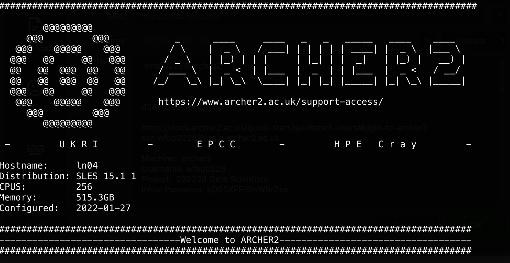
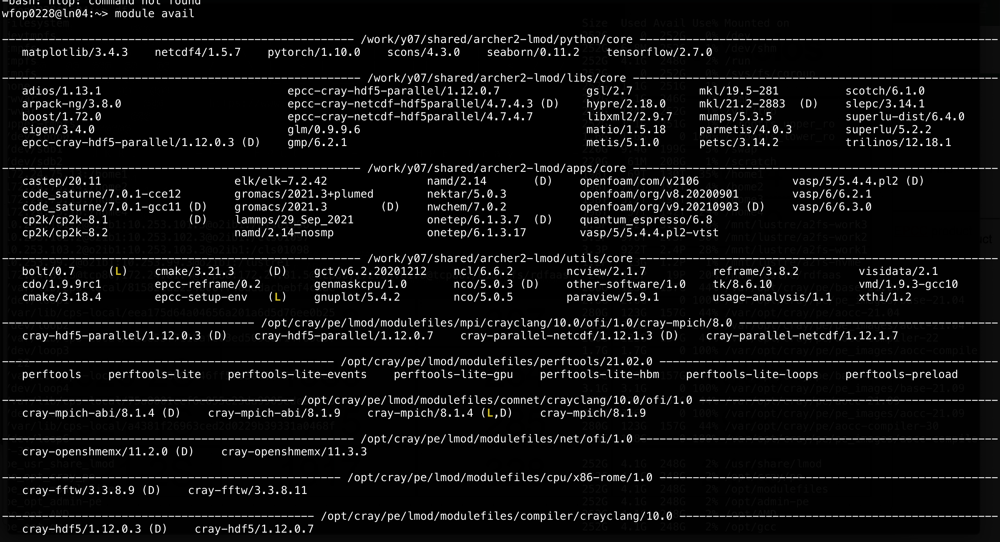
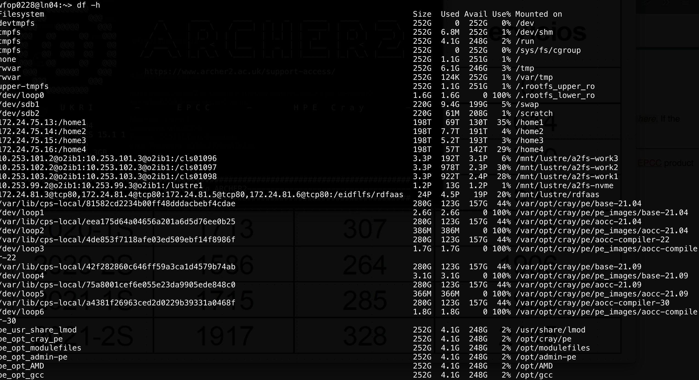

12. Introduction to High Performance Computing#
https://www.youtube.com/watch?v=Qlv5pB6u534 (Moore law)
https://www.archer.ac.uk/training/courses/index.php#hands_on_intro
https://www.youtube.com/watch?v=_h55hwpLwoE&list=PLD0xgZGaUd1IV8VgXb1ggOLkEv19JmZiP
https://www.sdsc.edu/services/service_rates_summary.html
EPCC PRACE Training
https://www.archer2.ac.uk/training/courses/211202-package-users/#materials
https://www.archer2.ac.uk/training/courses/210000-openmp-self-service/
https://www.archer2.ac.uk/training/courses/210000-mpi-self-service/
Reference Materials
See presentations hpc-intro.pdf, 07-HPC-Distributed.pdf and
07-Parallel-general-metrics.pdf . Special care to metrics.
Debuggers:
12.1. Introduction#
There is a point where a serial version of our code is not the most optimal way to exploit our computational resources (but it might be in the case of embarrassingly parallel problems where you can just run several programs at once). For instance, you might want to use all the cores on your multicore system, ideally reducing the execution time, or you need to explore larger system sizes that could consume a lot of memory or need too much time.
Typically, Moore’s law allowed to wait for a bit in order to get a better machine so your algorithms will run faster.
https://ourworldindata.org/uploads/2020/11/Transistor-Count-over-time.png
{kind=link}
But due to physics limitation and power considerations, it is now typical to have multicore systems
https://i.stack.imgur.com/fRJgk.png
{kind=link}
Recently, power considerations are being more and more relevant:
https://en.wikipedia.org/wiki/Performance_per_watt?useskin=vector
-
https://i.extremetech.com/imagery/content-types/07CyoCCWMzGjurj8zpuiYO4/images-2.jpg
{kind=link}
At the same time, the computational problems size and/or complexity has been steadily increasing in time, requiring distributed computing techniques.
{kind=link}
(see also https://en.wikipedia.org/wiki/Flynn’s_taxonomy?useskin=vector). Recently, besides CPU parallelization, the GPU parallelization has become very relevant (see https://en.wikipedia.org/wiki/General-purpose_computing_on_graphics_processing_units?useskin=vector ), where CUDA , OpenACC, and others, are the relevant technologies.
In our case, we will be more focused on the cluster computing aspect, while there are more HPC approaches, like grid computing, cloud computing, and so on. One of the goals of HPC is to get better results faster and/or to exploit better current or future resources.
{kind=link}
12.2. Basics of parallel metrics#
But, as usual, you should always measure. All programs have a serial part that cannot be parallelized and a parallel part than can. Using more processors/threads can reduce only the parallel, so a 100% serial program cannot really take advantage of a parallel system. This is known as Amdahls law, https://en.wikipedia.org/wiki/Amdahl’s_law?useskin=vector
https://upload.wikimedia.org/wikipedia/commons/e/ea/AmdahlsLaw.svg
{kind=link}
At the end, the user must also gauge its application performance. Blindly reserve of HPC resources represent a non efficient cluster use, and higher costs. In this regard, parallel metrics are really crucial. The next to figures show the speedup and the parallel efficiency. As you can see, they are limited by the hardware (and algorithms)
Speedup:

Parallel efficiency:

12.3. Practical overview of a cluster resources and use#
There are many aspects to take into account in the HPC field. If you are
a user, you should know abount the type of parallelization (shared
memory, disitributed memory, gpu programming), the type of hardware you
are using, the resource manager, the data storage and so on. The goal of
a system administrator is to make that easier, but that is not always
possible. Check the 12-12-hkhlr_quick_reference-goethe-hlr (from
https://csc.uni-frankfurt.de/wiki/doku.php?id=public:start) for an
example of a typical cluster config and offerings.
These are examples from the Archer cluster at https://www.archer2.ac.uk/

 In the following, we will see some basic examples for HPC, such us
Shared memory: with openmp
Distributed memory: using mpi
Multiple processes: using gnu parallel
C++ threads
TODO C++ parallel algorithms
12.5. MPI, distributed memory#
MPI, the Message Passing Interface, is a library API that allows process to interchange data in a distributed memory context. It is more comple that openmp, but also opens the door to a greater scale since we can use many computers, increasing both our computational power and memory capacity (if done correctly and efficiently).
The following shows the basic structure of a MPI program. It creates several processes that can communicate with each other, and can be run in multiple machines (for an introduction, see: https://mpitutorial.com/tutorials/mpi-introduction/)
#include <mpi.h>
#include <iostream>
int main(int argc, char** argv)
{
// Initialize the MPI environment
MPI_Init(&argc, &argv);
// Get the number of processes
int np;
MPI_Comm_size(MPI_COMM_WORLD, &np);
// Get the rank of the process
int pid;
MPI_Comm_rank(MPI_COMM_WORLD, &pid);
// Get the name of the processor
char processor_name[MPI_MAX_PROCESSOR_NAME];
int name_len;
MPI_Get_processor_name(processor_name, &name_len);
// Print off a hello world message
printf("Hello world from processor %s, rank %d out of %d processes\n",
processor_name, pid, np);
// Finalize the MPI environment.
MPI_Finalize();
}
You can compile it as
mpic++ mpi.cpp
(If you want to see all the flags, use mpic++ --showme)
And now run it as
mpirun -np 4 ./a.out
You can also specifiy different machines to run on, but you will need to have configured passwordless access to those machines.
12.6. Simple parallelization: farm task and gnu parallel or xargs#
Sometimes you do not need to actually parallelize your code, but to run
it with many parameters combination. Let’s assume that we have a task
that depend on one parameter and can be executed independent of other
parameters. It can be a very complex program, but for now it will be
just a very simple bash instructions that prints a value. Save the
following code in a bash script (like script.sh) that will use the
stress command to stress a single core
# file: script.sh
echo "First arg: ${1}"
stress -t 10 -c 1 # stress one core
echo "Stress test done"
When it is executed, it just prints the first argument
bash codes/script.sh 23
What if we want to do execute this task for 4 different arguments? we will just do it sequentially:
date +"%H-%M-%S"
bash codes/script.sh 23
bash codes/script.sh 42
bash codes/script.sh 10
bash codes/script.sh 57
date +"%H-%M-%S"
40 seconds in total. Remember that this example is very simple, but
assume that the script is a very large task. Then, the previous task
will take four times the time of a simple task. What if we have a
machine with four possible threads? it will be useful to run all the
commands in parallel. To do so you might just put them in the background
with the & character at the end. But what will happen if you need to
run 7 different arguments and you have only 4 threads? then it would be
not optimal to have all of them running at tha same time with less than
100% of cpu usage. It would be better to run 4 of them and when one of
the finishes then launch the next one and so on. To do this
programatically, you can use gnu parallel,
https://www.gnu.org/software/parallel/ (check the tutorial in the
documentation section, or the cheatsheet,
https://www.gnu.org/software/parallel/parallel_cheat.pdf). You can
install as spack info parallel, or load it with spack load parallel
if it not installed already. For our case, it would be very useful
date +"%H-%M-%S"
parallel 'bash codes/script.sh {} ' ::: 23 42 10 57
date +"%H-%M-%S"
08-12-25 |
||||||||||||
First |
arg: |
23 |
||||||||||
stress: |
info: |
[83775] |
dispatching |
hogs: |
1 |
cpu, |
0 |
io, |
0 |
vm, |
0 |
hdd |
Stress |
test |
done |
||||||||||
First |
arg: |
42 |
||||||||||
stress: |
info: |
[83779] |
dispatching |
hogs: |
1 |
cpu, |
0 |
io, |
0 |
vm, |
0 |
hdd |
Stress |
test |
done |
||||||||||
First |
arg: |
10 |
||||||||||
stress: |
info: |
[83781] |
dispatching |
hogs: |
1 |
cpu, |
0 |
io, |
0 |
vm, |
0 |
hdd |
Stress |
test |
done |
||||||||||
First |
arg: |
57 |
||||||||||
stress: |
info: |
[83785] |
dispatching |
hogs: |
1 |
cpu, |
0 |
io, |
0 |
vm, |
0 |
hdd |
Stress |
test |
done |
||||||||||
08-12-36 |
Around 10 seconds now! Gnu parallel will detect the number of cores and launch the process accodingly taking care of jobs distribution. Read the manual for the many options of this powerful tool that is used even on large clusters. For instance, try to run 7 processes:
date +"%H-%M-%S"
parallel 'bash codes/script.sh {} ' ::: 23 42 10 57 21 8 83
date +"%H-%M-%S"
08-13-20 |
||||||||||||
First |
arg: |
23 |
||||||||||
stress: |
info: |
[84082] |
dispatching |
hogs: |
1 |
cpu, |
0 |
io, |
0 |
vm, |
0 |
hdd |
Stress |
test |
done |
||||||||||
First |
arg: |
42 |
||||||||||
stress: |
info: |
[84086] |
dispatching |
hogs: |
1 |
cpu, |
0 |
io, |
0 |
vm, |
0 |
hdd |
Stress |
test |
done |
||||||||||
First |
arg: |
10 |
||||||||||
stress: |
info: |
[84088] |
dispatching |
hogs: |
1 |
cpu, |
0 |
io, |
0 |
vm, |
0 |
hdd |
Stress |
test |
done |
||||||||||
First |
arg: |
57 |
||||||||||
stress: |
info: |
[84091] |
dispatching |
hogs: |
1 |
cpu, |
0 |
io, |
0 |
vm, |
0 |
hdd |
Stress |
test |
done |
||||||||||
First |
arg: |
21 |
||||||||||
stress: |
info: |
[84161] |
dispatching |
hogs: |
1 |
cpu, |
0 |
io, |
0 |
vm, |
0 |
hdd |
Stress |
test |
done |
||||||||||
First |
arg: |
8 |
||||||||||
stress: |
info: |
[84165] |
dispatching |
hogs: |
1 |
cpu, |
0 |
io, |
0 |
vm, |
0 |
hdd |
Stress |
test |
done |
||||||||||
First |
arg: |
83 |
||||||||||
stress: |
info: |
[84168] |
dispatching |
hogs: |
1 |
cpu, |
0 |
io, |
0 |
vm, |
0 |
hdd |
Stress |
test |
done |
||||||||||
08-13-41 |
You can play with the -j n flag to control how many jobs to run with
parallel. By default it uses all possible threads
12.6.1. Using gnu parallel to run several matmul and compute metrics#
Now let’s use the previous matmul with eigen and blas exercise to show how to use parallel to run several matrix sizes at the same time and also to compute some parallel metrics. The code is
We have two goals:
To compute the wall time as a function of the matrix size (strong scaling, changing problem size), using blas.
To compute the speedup and parallel efficiency for a fixed matrix size.
In the first case we will just use parallel to run as many simulations as possible. In the second case we will compute some metrics to check when is our code the most efficient.
It is assumed that you have blas with spack, so you can load it as
spack load openblas
or might have to install it using
spack install openblas threads=openmp cxxflags="-O3" cflags="-O3" target=x86_64
(the last flag is just to have the same target independent of the actual machine, like the conditions we have in the computer room)
Strong scaling: Time as a function of matriz size, one thread, eigen + blas
Naively, we could just run the program serially for each matriz size, but if we are in computer with multiple cores/threads it would be better if we ran as many parameters as possible (adapt the following instructions to your case):
#source $HOME/repos/spack/share/spack/setup-env.sh spack load openblas #g++ -fopenmp -O3 -I $CMAKE_PREFIX_PATH/include -L $CMAKE_PREFIX_PATH/lib eigen-matmul.cpp -DEIGEN_USE_BLAS -lopenblas -o eigen_blas.x g++ -fopenmp -O3 eigen-matmul.cpp -DEIGEN_USE_BLAS -lopenblas -o eigen_blas.x parallel 'OMP_NUM_THREADS=1 ./eigen_blas.x {} 10 2>/dev//null' ::: 10 50 100 200 500 700 1000 2000 5000w
Check that your programs are running in parallel, as expected.
Exercise: Strong scaling for eigen eigenvectors
With the following code, compute the strong scaling of eigen when computing eigenvectors with the more general method:
#include <iostream> #include <cstdlib> #include <chrono> #include <eigen3/Eigen/Dense> void solve_eigensystem(int size, double &time); int main(int arg, char **argv) { const int M = atoi(argv[1]); // Matrix size const int R = atoi(argv[2]); // Repetitions const int S = atoi(argv[3]); // seed srand(S); double totaltime = 0, auxtime = 0; for(int irep = 0; irep < R; ++irep) { solve_eigensystem(M, auxtime); totaltime += auxtime; } std::cout << M << "\t" << totaltime/R << "\n"; } void solve_eigensystem(int size, double &time) { double aux; Eigen::MatrixXd A = Eigen::MatrixXd::Random(size, size); auto start = std::chrono::steady_clock::now(); Eigen::SelfAdjointEigenSolver<Eigen::MatrixXd> eigensolver(A); aux = eigensolver.eigenvalues()(0); auto end = std::chrono::steady_clock::now(); std::clog << "The first eigenvalue of A is:\n" << aux << std::endl; std::chrono::duration<double> diff = end - start; time = diff.count(); }
Compile como
g++ -O3 eigen-eigenvectors.cpp -o eigen.x
Ejecute como
./eigen.x M 5 3 2>/dev/null
debe cambiar M, matriz size.
Datos de ejemplo (dependen de la maquina, pero las relaciones entre ellos deben ser similares):
10 9.7568e-06 20 3.55734e-05 50 0.000312481 80 0.000890043 ... 2700 72.8078 3000 81.0619
Plot the data ad analyze.
Weak scaling: number of threads and parallel metrics
Here we will compute some key parallel metrics that inform about the efficiency of our code when running in parallel. Now you do not want to use gnu parallel since you have a variable number of thredas per process
source $HOME/repos/spack/share/spack/setup-env.sh spack load openblas #g++ -fopenmp -O3 -I $CMAKE_PREFIX_PATH/include -L $CMAKE_PREFIX_PATH/lib eigen-matmul.cpp -DEIGEN_USE_BLAS -lopenblas -o eigen_blas.x g++ -fopenmp -O3 eigen-matmul.cpp -DEIGEN_USE_BLAS -lopenblas -o eigen_blas.x parallel -j 1 'echo -n "{} "; OMP_NUM_THREADS={} ./eigen_blas.x 4000 10 2>/dev//null' ::: 1 2 3 4 5 6 7 8 9 10 11 12 13 14 15 16
The following is data obtained from a run in a 8core/16threads computer, running only with eigen
1 4000 6.75223 0.00290168 6.75225 0.0029001 2 4000 3.52052 0.00405504 7.01616 0.00819132 3 4000 2.40281 0.0117795 7.15847 0.0355119 4 4000 1.85186 0.0049013 7.33257 0.0187681 5 4000 1.72682 0.176218 8.53451 0.880953 6 4000 1.65921 0.00946933 9.83127 0.0574367 7 4000 1.52068 0.00538196 10.4943 0.0370317 8 4000 1.39755 0.0326183 11.006 0.260568 9 4000 2.26355 0.00254841 19.9546 0.0452903 10 4000 2.04808 0.00732663 20.0991 0.0807175 11 4000 2.00821 0.00876695 21.7043 0.104527 12 4000 1.76768 0.0276189 20.834 0.324801 13 4000 1.77771 0.00686642 22.7412 0.0887671 14 4000 1.59293 0.0116353 21.9208 0.213236 15 4000 1.56692 0.00829185 23.1334 0.121202 16 4000 1.49262 0.0321579 23.3921 0.417985
And these are with running with eigen+blas
1 4000 1.76345 0.00750705 1.76345 0.0075023 2 4000 0.930922 0.00450842 1.83688 0.00900039 3 4000 0.666528 0.0122499 1.94996 0.0365303 4 4000 0.523076 0.00175201 2.01795 0.00654245 5 4000 0.442096 0.00226719 2.1107 0.0108692 6 4000 0.394103 0.00867531 2.23982 0.0513271 7 4000 0.371224 0.000725666 2.44876 0.00691333 8 4000 0.35202 0.00564542 2.64095 0.0441576 9 4000 0.53266 0.00218486 4.59061 0.02803 10 4000 0.496156 0.00207424 4.73416 0.0281744 11 4000 0.461317 0.00102704 4.82462 0.0111843 12 4000 0.550406 0.0431109 6.32975 0.518631 13 4000 0.514583 0.0119228 6.38601 0.144949 14 4000 0.494073 0.0166192 6.58912 0.231588 15 4000 0.484151 0.0121776 6.90909 0.179303 16 4000 0.493364 0.0316198 7.45327 0.429279
The two more important parallel metric efficiency.
The speed up is defined as
where \(T_1\) is the reference time with one thread, and \(T_n\) with n threads. For a perfect scaling, \(T_n = T_1/n\), so \(S_{\rm theo}(n) = n\). This does not occur always and depend on the actual machine, the communication patterns and so on. In the following we will use \(T_1 = 6.75223\) for eigen and \(T_1 = 1.76345\) for eigen+blas.
The parallel efficiency measures roughly how efficiently we are using all the threads. It is defined as
and, therefore, theoretically it is equal to 1.
To easily create the data we need, we could use a spreadsheet or better, the command line
awk '{print $1, 6.75223/$3, 6.75223/$3/$1 }' codes/eigen.txt > codes/eigen_metrics.txt awk '{print $1, 1.76345/$3, 1.76345/$3/$1 }' codes/eigen_blas.txt > codes/eigen_blas_metrics.txt
Then we can plot and analize
set term png enhaced giant#; set out 'tmpspeedup.png' set key l t; set xlabel 'nthreads'; set ylabel 'Parallel speedup'; set title 'Computer with 8cores/16threads' plot [:17][:] x lt -1 t 'theo', 'codes/eigen_metrics.txt' u 1:2 w lp t 'eigen', 'codes/eigen_blas_metrics.txt' u 1:2 w lp t 'eigen+blas'
#set term png; set out 'efficiency.png' set key l b; set xlabel 'nthreads'; set ylabel 'Parallel efficiency'; set title 'Computer with 8cores/16threads' plot [:17][-0.1:1.1] 1 lt -1, 'codes/eigen_metrics.txt' u 1:3 w lp t 'eigen', 'codes/eigen_blas_metrics.txt' u 1:3 w lp t 'eigen+blas', 0.6 lt 4
Normally, if you want to buy some cloud services to run your code, you should use threads that give equal or above 60-70% efficiency.
{kind=link}
{kind=link}
12.7. Threads from c++11#
The c++11 standard included, among many other usefull things, the use
a thread. A thread is a lightweight process that can be launched in
parallel with other threads from a parent process. In the following we
will see some very simple examples since at the end we will focus mainly
on OpenMP (where threads are the key and the memory is shared) and MPI
(where processes are the basic unit and memory is distributed).
The following example are based on
The following example shows how to create a thread from a given process, and its output:
#include <iostream>
#include <thread>
void func(int x);
int main(int argc, char **argv) {
std::thread th1(&func, 100);
std::thread th2(&func, 200);
th1.join();
std::cout << "Outside thread" << std::endl;
th2.join();
return 0;
}
void func(int x) {
std::cout << "Inside thread " << x << std::endl;
std::thread::id this_id = std::this_thread::get_id();
std::cout << "This is thread_id: " << this_id << std::endl;
}
Compile it as
g++ -std=c++11 thread-v1.cpp
The folowwing is an example of the output:
Inside |
thread |
Inside |
thread |
100200 |
||
This |
is |
threadid: |
This |
is |
threadid: |
0x700003c34000 |
0x700003cb7000 |
||||||
Outside |
thread |
Run it several times, you will obtain different outputs, many times they will be mangled. Why? because the threads are running in parallel and their output is not independent of each other, not synced.
To check that we are really running two threads, let’s increase the
computational effort inside function func and then, while the program
is running, use top or htop to check what is running on your computer.
Notice that the cpu use percentage is around 200%:
#include <iostream>
#include <thread>
#include <chrono>
#include <cmath>
void func(double x, int nsecs);
int main(int argc, char **argv) {
const int secs = std::atoi(argv[1]);
std::thread th1(&func, 100, secs);
std::thread th2(&func, 200, secs);
std::thread th3(&func, 300, secs);
th1.join();
std::cout << "Outside thread" << std::endl;
th2.join();
th3.join();
return 0;
}
void func(double x, int nsecs) {
std::cout << "Inside thread " << x << std::endl;
std::this_thread::sleep_for (std::chrono::seconds(nsecs)); // make this sleep, does not consume a lot of resources
for (int ii = 0; ii < 100000000; ++ii) {
x += std::fabs(x*std::sin(x) + std::sqrt(x)/3.4455)/(ii+1);
}
std::cout << "Getting out of thread " << x << std::endl;
}
The folowwing is an example of the output:
Inside |
thread |
Inside |
thread |
100 |
200 |
||||
Getting |
out |
of |
thread |
9387820000.0 |
Outside |
thread |
|||
Getting |
out |
of |
thread |
18849600000.0 |
To synchronize threads, you can use a mutex. This is useful in case you need to sort out the printing, or, more importantly, to syncrhonize a writing operation on some common variable. The following is a simple example:
#include <iostream>
#include <thread>
#include <chrono>
#include <mutex>
std::mutex g_display_mutex;
void foo()
{
std::thread::id this_id = std::this_thread::get_id();
g_display_mutex.lock();
std::cout << "thread " << this_id << " sleeping...\n";
g_display_mutex.unlock();
std::this_thread::sleep_for(std::chrono::seconds(1));
}
int main()
{
std::thread t1(foo);
std::thread t2(foo);
t1.join();
t2.join();
return 0;
}
thread |
0x70000709a000 |
sleeping… |
thread |
0x70000711d000 |
sleeping… |
Repeat several times. Although the thread id will change, the output will not be mangled.
There is much more about threads, but since our focus will turn to OpenMP, we will stop here. For more info check https://en.cppreference.com/w/cpp/thread/thread
12.7.1. Exercise#
Fix the following code, which has a race condition, using a mutex (ref: https://www.classes.cs.uchicago.edu/archive/2013/spring/12300-1/labs/lab6/) :
#include <iostream>
#include <vector>
#include <thread>
void square(const int x, int & result);
int main() {
int accum = 0;
std::vector<std::thread> ths;
for (int i = 1; i <= 20; i++) {
ths.push_back(std::thread(&square, i, std::ref(accum)));
}
for (auto & th : ths) {
th.join();
}
std::cout << "accum = " << accum << std::endl;
return 0;
}
void square(int x, int &result) {
result += x * x;
}
accum = 2870
The correct answer is 2870, but if you repeat the execution many times
you will find different results. For instance, repeating the execution
1000 times and checking for the unique answers one gets
for i in {1..1000}; do ./a.out; done | sort | uniq -c
2 accum = 2509
1 accum = 2674
2 accum = 2749
1 accum = 2806
1 accum = 2834
4 accum = 2845
1 accum = 2854
1 accum = 2861
2 accum = 2866
6 accum = 2869
979 accum = 2870
which shows that it not always yield 2870 .
12.8. Parallel algorithms in c++#
Since c++17, it is possible to execute some stl algorithms in parallel
(shared memory), without explictly using threads. See:
This a simple example for performing a sum
#include <iostream>
#include <algorithm>
#include <numeric>
#include <vector>
#include <execution>
int main() {
const long ARRAY_SIZE = 100000000;
std::vector<double> myArray(ARRAY_SIZE);
std::iota(myArray.begin(), myArray.end(), 0); // fill array with 0, 1, 2, ..., ARRAY_SIZE-1
// sequential execution
auto sum_seq = std::accumulate(myArray.begin(), myArray.end(), 0.0);
std::cout << "Sequential sum: " << sum_seq << std::endl;
// parallel execution
auto sum_par = std::reduce(std::execution::par, myArray.begin(), myArray.end());
std::cout << "Parallel sum: " << sum_par << std::endl;
return 0;
}
To compile, use
g++ -std=c++17 par.cpp -ltbb
This is linking with an intel threads implementation.
You can of course measure how much time is spent on each part. To do so, we will use chrono:
Implementation 1:
#include <iostream>
#include <algorithm>
#include <numeric>
#include <vector>
#include <execution>
int main() {
const long ARRAY_SIZE = 100000000;
std::vector<double> myArray(ARRAY_SIZE);
std::iota(myArray.begin(), myArray.end(), 0); // fill array with 0, 1, 2, ..., ARRAY_SIZE-1
// sequential execution
auto start_time = std::chrono::high_resolution_clock::now();
auto sum_seq = std::accumulate(myArray.begin(), myArray.end(), 0.0);
auto end_time = std::chrono::high_resolution_clock::now();
auto seq_duration = std::chrono::duration_cast<std::chrono::milliseconds>(end_time - start_time);
std::cout << "Sequential sum: " << sum_seq << "( took : " << seq_duration.count()/1000.0 << " s)" << std::endl;
// parallel execution
start_time = std::chrono::high_resolution_clock::now();
auto sum_par = std::reduce(std::execution::par, myArray.begin(), myArray.end());
end_time = std::chrono::high_resolution_clock::now();
seq_duration = std::chrono::duration_cast<std::chrono::milliseconds>(end_time - start_time);
std::cout << "Parallel sum: " << sum_par << "( took : " << seq_duration.count()/1000.0 << " s)" << std::endl;
return 0;
}
Implementation 2:
#include <iostream>
#include <algorithm>
#include <numeric>
#include <vector>
#include <execution>
#include <chrono>
template<typename Func>
void time_function(Func func);
int main() {
const long ARRAY_SIZE = 100000000;
std::vector<double> myArray(ARRAY_SIZE);
std::iota(myArray.begin(), myArray.end(), 0); // fill array with 0, 1, 2, ..., ARRAY_SIZE-1
// sequential execution
auto serial = [&myArray](){return std::accumulate(myArray.begin(), myArray.end(), 0.0);};
time_function(serial);
// parallel execution
auto parallel = [&myArray](){return std::reduce(std::execution::par, myArray.begin(), myArray.end());};
time_function(parallel);
return 0;
}
template<typename Func>
void time_function(Func func) {
auto start = std::chrono::high_resolution_clock::now();
func();
auto end = std::chrono::high_resolution_clock::now();
auto duration_ms = std::chrono::duration_cast<std::chrono::milliseconds>(end - start).count();
std::cout << "Elapsed time: " << duration_ms/1000.0 << " s" << std::endl;
}
The standard does not specify a way to control the nuber tof threads. If you want to do so, and you are using Intel Threads Block implementation, you can add gthe following header
#include <tbb/task_scheduler_init.h>
and then , at some point, specify the thread total (in this case, 4)
tbb::task_scheduler_init init(4);
To learn more about the parallel algs, check
12.9. TODO Gpu Programming intro#
12.9.1. Environment setup for cuda#
Here I show two ways to setup the dev environment. One is based on a local computer with a graphics card, and the other using google collab.
Local environment
Here we will setup a computer which has an Nvidia Quadro P1000 card. You need to install both the driver and the cuda toolkit (the later better to be installed as a part of the nvidia sdk)
Driver download for quadro P1000: https://www.nvidia.com/Download/driverResults.aspx/204639/en-us/
Nvidia sdk: https://developer.nvidia.com/hpc-sdk-downloads
Nvidia singularity: This is the recommended way. The image is built at /packages/nvhpc23.3devel.sif. More instructions at https://catalog.ngc.nvidia.com/orgs/nvidia/containers/nvhpc
Accesing a shell inside the container but with visibility to all user account files:
singularity shell --nv /packages/nvhpc_23.3_devel.sif
Compiling
singularity exec --nv /packages/nvhpc_23.3_devel.sif nvc++ -g cuda_02.cu
Executing with nvprof
singularity exec --nv /packages/nvhpc_23.3_devel.sif nvprof ./a.out
Local module: Load the nvidia sdk (sala2):
module load /packages/nvidia/hpc_sdk/modulefiles/nvhpc/23.3
Compile as
nvc++ -std=c++17 -o offload.x offload.cpp
The docker container is installed. Unfortunately it does not run since the device compute capability is not enough
docker run --gpus all -it --rm nvcr.io/nvidia/nvhpc:23.3-devel-cuda_multi-ubuntu20.04 docker: Error response from daemon: could not select device driver "" with capabilities: [[gpu]].
More info about container: https://catalog.ngc.nvidia.com/orgs/nvidia/containers/nvhpc
Google collab
Open a collab notebook, go to runtime, change runtime type, hardware accelerator -> GPU, GPU type -> T4, Save. The you will have a runtime with a T4 card, for free. If you want an even better card, you can pay for collab pro.
Inside the notebook, you can run commands with the prefix
!to run then as in a console. For instance, to get the device properties, you can run!nvidia-smi
to get something like
+-----------------------------------------------------------------------------+ | NVIDIA-SMI 525.85.12 Driver Version: 525.85.12 CUDA Version: 12.0 | |-------------------------------+----------------------+----------------------+ | GPU Name Persistence-M| Bus-Id Disp.A | Volatile Uncorr. ECC | | Fan Temp Perf Pwr:Usage/Cap| Memory-Usage | GPU-Util Compute M. | | | | MIG M. | |===============================+======================+======================| | 0 Tesla T4 Off | 00000000:00:04.0 Off | 0 | | N/A 44C P8 9W / 70W | 0MiB / 15360MiB | 0% Default | | | | N/A | +-------------------------------+----------------------+----------------------+ +-----------------------------------------------------------------------------+ | Processes: | | GPU GI CI PID Type Process name GPU Memory | | ID ID Usage | |=============================================================================| | No running processes found | +-----------------------------------------------------------------------------+
To create local files, like
filename.cu, use the magic%%writefile filename.cuat the beginning of the cell and then put the file contents in the same cell.Finally, to compile and run just execute the following
!nvcc filename.cu -o name.x !nvprof ./name.x
12.9.2. TODO Cuda intro#
REF https://en.wikipedia.org/wiki/CUDA?useskin=vector Tutorial1: https://cuda-tutorial.readthedocs.io/en/latest/tutorials/tutorial01/ Tutorial2 https://developer.nvidia.com/blog/even-easier-introduction-cuda/
Tutorial 1
https://cuda-tutorial.readthedocs.io/en/latest/tutorials/tutorial01/ Example in c
Compile as
gcc example_01.cNow the same but in cuda:
Compile as
nvcc example_01.cuExecution will show errors, due to the fact that the code is NOT running on the device.
We need to allocate memory on it(
cudaMallocandcudaFree), and trasfer data to and from it (cudaMemCopy).Tutorial 2
https://developer.nvidia.com/blog/even-easier-introduction-cuda/
#include <iostream> #include <math.h> // function to add the elements of two arrays void add(int n, float *x, float *y) { for (int i = 0; i < n; i++) y[i] = x[i] + y[i]; } int main(void) { int N = 1<<20; // 1M elements float *x = new float[N]; float *y = new float[N]; // initialize x and y arrays on the host for (int i = 0; i < N; i++) { x[i] = 1.0f; y[i] = 2.0f; } // Run kernel on 1M elements on the CPU add(N, x, y); // Check for errors (all values should be 3.0f) float maxError = 0.0f; for (int i = 0; i < N; i++) maxError = fmax(maxError, fabs(y[i]-3.0f)); std::cout << "Max error: " << maxError << std::endl; // Free memory delete [] x; delete [] y; return 0; }
Compile as
g++ -g -std=c++17 cuda_01.cpp
Cuda example
#include <iostream> #include <math.h> // Kernel function to add the elements of two arrays __global__ void add(int n, float *x, float *y) { for (int i = 0; i < n; i++) y[i] = x[i] + y[i]; } int main(void) { int N = 1<<20; float *x, *y; // Allocate Unified Memory – accessible from CPU or GPU cudaMallocManaged(&x, N*sizeof(float)); cudaMallocManaged(&y, N*sizeof(float)); // initialize x and y arrays on the host for (int i = 0; i < N; i++) { x[i] = 1.0f; y[i] = 2.0f; } // Run kernel on 1M elements on the GPU add<<<1, 1>>>(N, x, y); // Wait for GPU to finish before accessing on host cudaDeviceSynchronize(); // Check for errors (all values should be 3.0f) float maxError = 0.0f; for (int i = 0; i < N; i++) maxError = fmax(maxError, fabs(y[i]-3.0f)); std::cout << "Max error: " << maxError << std::endl; // Free memory cudaFree(x); cudaFree(y); return 0; }
To compile, use
nvc++.If you have a singularity container with the nvidia sdk, you can just run the following
singularity exec --nv /packages/nvhpc_23.3_devel.sif nvc++ -g cuda_02.cu singularity exec --nv /packages/nvhpc_23.3_devel.sif ./a.out singularity exec --nv /packages/nvhpc_23.3_devel.sif nvprof ./a.out
and get something like
==16094== NVPROF is profiling process 16094, command: ./a.out Max error: 0 ==16094== Profiling application: ./a.out ==16094== Profiling result: Type Time(%) Time Calls Avg Min Max Name GPU activities: 100.00% 2.54774s 1 2.54774s 2.54774s 2.54774s add(int, float*, float*) API calls: 93.27% 2.54776s 1 2.54776s 2.54776s 2.54776s cudaDeviceSynchronize 6.71% 183.20ms 2 91.602ms 20.540us 183.18ms cudaMallocManaged 0.02% 468.25us 2 234.13us 216.27us 251.98us cudaFree 0.01% 213.75us 101 2.1160us 141ns 150.11us cuDeviceGetAttribute 0.00% 32.127us 1 32.127us 32.127us 32.127us cudaLaunchKernel 0.00% 22.239us 1 22.239us 22.239us 22.239us cuDeviceGetName 0.00% 6.1330us 1 6.1330us 6.1330us 6.1330us cuDeviceGetPCIBusId 0.00% 1.5730us 3 524ns 197ns 1.1650us cuDeviceGetCount 0.00% 808ns 2 404ns 141ns 667ns cuDeviceGet 0.00% 530ns 1 530ns 530ns 530ns cuDeviceTotalMem 0.00% 243ns 1 243ns 243ns 243ns cuDeviceGetUuid ==16094== Unified Memory profiling result: Device "Quadro P1000 (0)" Count Avg Size Min Size Max Size Total Size Total Time Name 48 170.67KB 4.0000KB 0.9961MB 8.000000MB 735.2380us Host To Device 24 170.67KB 4.0000KB 0.9961MB 4.000000MB 337.3770us Device To Host 24 - - - - 2.855987ms Gpu page fault groups Total CPU Page faults: 36
You can also run it on google collab, where you will have an nvidia T4 card available for free (after changing the runtime), with the following typical output
==18853== NVPROF is profiling process 18853, command: ./cuda_02.x Max error: 0 ==18853== Profiling application: ./cuda_02.x ==18853== Profiling result: Type Time(%) Time Calls Avg Min Max Name GPU activities: 100.00% 108.83ms 1 108.83ms 108.83ms 108.83ms add(int, float*, float*) API calls: 72.48% 290.34ms 2 145.17ms 36.191us 290.31ms cudaMallocManaged 27.17% 108.84ms 1 108.84ms 108.84ms 108.84ms cudaDeviceSynchronize 0.28% 1.1298ms 2 564.90us 537.96us 591.84us cudaFree 0.05% 182.13us 101 1.8030us 264ns 75.268us cuDeviceGetAttribute 0.01% 48.553us 1 48.553us 48.553us 48.553us cudaLaunchKernel 0.01% 28.488us 1 28.488us 28.488us 28.488us cuDeviceGetName 0.00% 8.6520us 1 8.6520us 8.6520us 8.6520us cuDeviceGetPCIBusId 0.00% 2.3140us 3 771ns 328ns 1.6230us cuDeviceGetCount 0.00% 919ns 2 459ns 315ns 604ns cuDeviceGet 0.00% 580ns 1 580ns 580ns 580ns cuDeviceTotalMem 0.00% 532ns 1 532ns 532ns 532ns cuModuleGetLoadingMode 0.00% 382ns 1 382ns 382ns 382ns cuDeviceGetUuid ==18853== Unified Memory profiling result: Device "Tesla T4 (0)" Count Avg Size Min Size Max Size Total Size Total Time Name 48 170.67KB 4.0000KB 0.9961MB 8.000000MB 809.9640us Host To Device 24 170.67KB 4.0000KB 0.9961MB 4.000000MB 360.6320us Device To Host 12 - - - - 2.564287ms Gpu page fault groups Total CPU Page faults: 36
If you increase just the number of threads to 256 (check the change in
<<<...>>>), and split correctly the work using the cuda varsthreadIdx.x(thread id in the block) andblockDim.x(number of threads in the block), as shown,__global__ void add(int n, float *x, float *y) { int index = threadIdx.x; int stride = blockDim.x; for (int i = index; i < n; i += stride) y[i] = x[i] + y[i]; }
// Run kernel on 1M elements on the GPU add<<<1, 256>>>(N, x, y);
then you get the following output
Quadro P1000 : From 2.5 secs to 0.022 secs!
==21739== NVPROF is profiling process 21739, command: ./a.out Max error: 0 ==21739== Profiling application: ./a.out ==21739== Profiling result: Type Time(%) Time Calls Avg Min Max Name GPU activities: 100.00% 21.978ms 1 21.978ms 21.978ms 21.978ms add(int, float*, float*) API calls: 87.86% 164.24ms 2 82.118ms 12.398us 164.22ms cudaMallocManaged 11.76% 21.980ms 1 21.980ms 21.980ms 21.980ms cudaDeviceSynchronize 0.24% 457.32us 2 228.66us 177.89us 279.43us cudaFree 0.11% 206.80us 101 2.0470us 128ns 144.81us cuDeviceGetAttribute 0.02% 29.041us 1 29.041us 29.041us 29.041us cudaLaunchKernel 0.01% 20.149us 1 20.149us 20.149us 20.149us cuDeviceGetName 0.00% 5.5860us 1 5.5860us 5.5860us 5.5860us cuDeviceGetPCIBusId 0.00% 2.1000us 3 700ns 277ns 958ns cuDeviceGetCount 0.00% 952ns 2 476ns 330ns 622ns cuDeviceGet 0.00% 391ns 1 391ns 391ns 391ns cuDeviceTotalMem 0.00% 259ns 1 259ns 259ns 259ns cuDeviceGetUuid ==21739== Unified Memory profiling result: Device "Quadro P1000 (0)" Count Avg Size Min Size Max Size Total Size Total Time Name 48 170.67KB 4.0000KB 0.9961MB 8.000000MB 734.5940us Host To Device 24 170.67KB 4.0000KB 0.9961MB 4.000000MB 338.5950us Device To Host 24 - - - - 1.764587ms Gpu page fault groups Total CPU Page faults: 36
Tesla T4: From 0.108 secs to 0.004 secs!
==21448== NVPROF is profiling process 21448, command: ./cuda_03.x Max error: 0 ==21448== Profiling application: ./cuda_03.x ==21448== Profiling result: Type Time(%) Time Calls Avg Min Max Name GPU activities: 100.00% 3.7978ms 1 3.7978ms 3.7978ms 3.7978ms add(int, float*, float*) API calls: 98.24% 291.22ms 2 145.61ms 73.005us 291.15ms cudaMallocManaged 1.28% 3.8044ms 1 3.8044ms 3.8044ms 3.8044ms cudaDeviceSynchronize 0.36% 1.0699ms 2 534.95us 512.29us 557.62us cudaFree 0.08% 222.64us 101 2.2040us 174ns 102.62us cuDeviceGetAttribute 0.02% 62.588us 1 62.588us 62.588us 62.588us cudaLaunchKernel 0.02% 44.725us 1 44.725us 44.725us 44.725us cuDeviceGetName 0.00% 8.1290us 1 8.1290us 8.1290us 8.1290us cuDeviceGetPCIBusId 0.00% 3.2970us 3 1.0990us 266ns 2.6840us cuDeviceGetCount 0.00% 1.7320us 2 866ns 352ns 1.3800us cuDeviceGet 0.00% 632ns 1 632ns 632ns 632ns cuDeviceTotalMem 0.00% 549ns 1 549ns 549ns 549ns cuModuleGetLoadingMode 0.00% 377ns 1 377ns 377ns 377ns cuDeviceGetUuid ==21448== Unified Memory profiling result: Device "Tesla T4 (0)" Count Avg Size Min Size Max Size Total Size Total Time Name 48 170.67KB 4.0000KB 0.9961MB 8.000000MB 825.8720us Host To Device 24 170.67KB 4.0000KB 0.9961MB 4.000000MB 360.3130us Device To Host 13 - - - - 2.951606ms Gpu page fault groups Total CPU Page faults: 36
Cuda devices group parallel processors into Streaming Multiprocessors (SM), and each of them can run several threads in parallel. In our case, by using the command
deviceQuery(for the QuadroP1000 system it is at/opt/cuda/extras/demo_suite/deviceQuery), we getQuadro P1000: 5 SM, 128 threads/SM
Tesla T4: 32 SM, 128 threads/SM
So the ideal number of threads changes per card, and we will compute as
int blockSize = 128; int numBlocks = (N + blockSize - 1) / blockSize; // what if N is not divisible by blocksize? add<<<numBlocks, blockSize>>>(N, x, y);
Notice that you can also compute this constant by using the follow code (generated by bard.google.com)
// Get the number of threads per multiprocessor. int threadsPerMultiprocessor; cudaError_t err = cudaDeviceGetAttribute(&threadsPerMultiprocessor, cudaDevAttrMaxThreadsPerMultiprocessor, device); if (err != cudaSuccess) { // Handle error. }
The kernel will now become
__global__ void add(int n, float *x, float *y) { int index = blockIdx.x * blockDim.x + threadIdx.x; int stride = blockDim.x * gridDim.x; for (int i = index; i < n; i += stride) y[i] = x[i] + y[i]; }
based on the job distribution done by the tutorial https://developer-blogs.nvidia.com/wp-content/uploads/2017/01/cuda_indexing.png
Now we get
Nvidia Quadro P1000: From 2.500 to 0.022 to 0.006 secs!
==10662== NVPROF is profiling process 10662, command: ./a.out Max error: 0 ==10662== Profiling application: ./a.out ==10662== Profiling result: Type Time(%) Time Calls Avg Min Max Name GPU activities: 100.00% 6.0868ms 1 6.0868ms 6.0868ms 6.0868ms add(int, float*, float*) API calls: 96.03% 165.28ms 2 82.641ms 13.911us 165.27ms cudaMallocManaged 3.54% 6.0887ms 1 6.0887ms 6.0887ms 6.0887ms cudaDeviceSynchronize 0.27% 460.56us 2 230.28us 184.71us 275.85us cudaFree 0.13% 215.37us 101 2.1320us 133ns 151.55us cuDeviceGetAttribute 0.02% 30.822us 1 30.822us 30.822us 30.822us cudaLaunchKernel 0.01% 22.122us 1 22.122us 22.122us 22.122us cuDeviceGetName 0.00% 5.7430us 1 5.7430us 5.7430us 5.7430us cuDeviceGetPCIBusId 0.00% 1.3810us 3 460ns 203ns 945ns cuDeviceGetCount 0.00% 921ns 2 460ns 163ns 758ns cuDeviceGet 0.00% 438ns 1 438ns 438ns 438ns cuDeviceTotalMem 0.00% 234ns 1 234ns 234ns 234ns cuDeviceGetUuid ==10662== Unified Memory profiling result: Device "Quadro P1000 (0)" Count Avg Size Min Size Max Size Total Size Total Time Name 59 138.85KB 4.0000KB 0.9961MB 8.000000MB 740.3880us Host To Device 24 170.67KB 4.0000KB 0.9961MB 4.000000MB 337.8280us Device To Host 32 - - - - 2.253582ms Gpu page fault groups Total CPU Page faults: 36
Testla T4: From 0.108 to 0.004 to 0.003 secs
==8972== NVPROF is profiling process 8972, command: ./cuda_04.x Max error: 0 ==8972== Profiling application: ./cuda_04.x ==8972== Profiling result: Type Time(%) Time Calls Avg Min Max Name GPU activities: 100.00% 2.9741ms 1 2.9741ms 2.9741ms 2.9741ms add(int, float*, float*) API calls: 98.47% 250.63ms 2 125.31ms 38.785us 250.59ms cudaMallocManaged 1.18% 2.9959ms 1 2.9959ms 2.9959ms 2.9959ms cudaDeviceSynchronize 0.24% 613.16us 2 306.58us 302.27us 310.89us cudaFree 0.07% 188.26us 101 1.8630us 169ns 86.068us cuDeviceGetAttribute 0.02% 38.874us 1 38.874us 38.874us 38.874us cuDeviceGetName 0.01% 37.051us 1 37.051us 37.051us 37.051us cudaLaunchKernel 0.00% 5.7050us 1 5.7050us 5.7050us 5.7050us cuDeviceGetPCIBusId 0.00% 2.2980us 3 766ns 224ns 1.8050us cuDeviceGetCount 0.00% 979ns 2 489ns 195ns 784ns cuDeviceGet 0.00% 587ns 1 587ns 587ns 587ns cuDeviceTotalMem 0.00% 367ns 1 367ns 367ns 367ns cuModuleGetLoadingMode 0.00% 324ns 1 324ns 324ns 324ns cuDeviceGetUuid ==8972== Unified Memory profiling result: Device "Tesla T4 (0)" Count Avg Size Min Size Max Size Total Size Total Time Name 106 77.282KB 4.0000KB 980.00KB 8.000000MB 969.6510us Host To Device 24 170.67KB 4.0000KB 0.9961MB 4.000000MB 363.6760us Device To Host 11 - - - - 2.908132ms Gpu page fault groups Total CPU Page faults: 36
{kind=link}
12.9.3. TODO Openmp offload to gpu#
REF:
Code
#include <iostream>
#include <cstdio>
#include <omp.h>
int main()
{
int a[100], b[100], c[100];
int i;
// Initialize arrays a and b
for (i = 0; i < 100; i++) {
a[i] = i;
b[i] = 2 * i;
}
int num_devices = omp_get_num_devices();
printf("Number of available devices %d\n", num_devices);
// Offload computation to GPU
#pragma omp target teams distribute parallel for map(to:a[0:100], b[0:100]) map(from:c[0:100])
for (i = 0; i < 100; i++) {
c[i] = a[i] + b[i];
}
// Print results
for (i = 0; i < 100; i++) {
std::cout << c[i] << " ";
}
std::cout << std::endl;
return 0;
}
Does not work in sala2 due to the error
OpenMP GPU Offload is available only on systems with NVIDIA GPUs with compute capability '>= cc70
It seems that sala2 compute capability is 6.1. It can be get with
nvidia-smi --query-gpu=compute_cap --format=csv
Using google collab I can compile it
!nvcc -arch sm_75 -O3 -o openmp_offload openmp_offload.cpp -lgomp
and get
Number of available devices 1
0 3 6 9 12 15 18 21 24 27 30 33 36 ...
Check:
/* Copyright (c) 2019 CSC Training */
/* Copyright (c) 2021 ENCCS */
#include <stdio.h>
#ifdef _OPENMP
#include <omp.h>
#endif
int main()
{
int num_devices = omp_get_num_devices();
printf("Number of available devices %d\n", num_devices);
#pragma omp target
{
if (omp_is_initial_device()) {
printf("Running on host\n");
} else {
int nteams= omp_get_num_teams();
int nthreads= omp_get_num_threads();
printf("Running on device with %d teams in total and %d threads in each team\n",nteams,nthreads);
}
}
return 0;
}
12.9.4. TODO OpenACC intro#
REF:
https://enccs.github.io/OpenACC-CUDA-beginners/1.02_openacc-introduction/
https://ulhpc-tutorials.readthedocs.io/en/latest/gpu/openacc/basics/
Check if we are using the gpu or the cpu:
#include <stdio.h>
#include <openacc.h>
int main() {
int device_type = acc_get_device_type();
if (device_type == acc_device_nvidia) {
printf("Running on an NVIDIA GPU\n");
} else if (device_type == acc_device_radeon) {
printf("Running on an AMD GPU\n");
//} else if (device_type == acc_device_intel_mic) {
//printf("Running on an Intel MIC\n");
} else if (device_type == acc_device_host) {
printf("Running on the host CPU\n");
} else {
printf("Unknown device type\n");
}
return 0;
}
Compile as
gcc -fopenacc mycode.c
Simple example:
#include <stdio.h>
int main() {
int i;
float a[100], b[100], c[100];
// Initialize arrays
for (i = 0; i < 100; i++) {
a[i] = i;
b[i] = i;
}
// Compute element-wise sum
#pragma acc parallel loop
for (i = 0; i < 100; i++) {
c[i] = a[i] + b[i];
}
// Print result
for (i = 0; i < 100; i++) {
printf("%f\n", c[i]);
}
return 0;
}